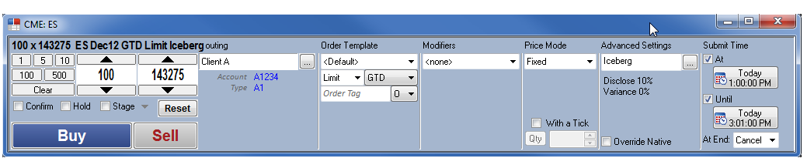
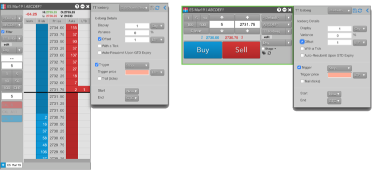
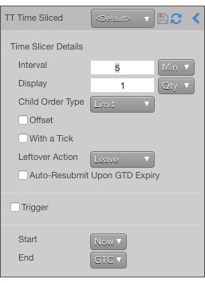
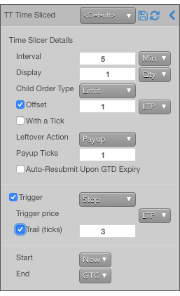

X_TRADER and TT both support synthetic order types to provide functionality that is not natively supported by an exchange.
In X_TRADER the synthetic order types, commonly referred to as SSE order types, are managed by a Synthetic Strategy Engine (SSE) server. The SSE order types are configured using the Order Pane of the Market Window.
On TT, the synthetic order types are called TT Order Types. They are managed by a server that is included as part of the TT platform and requires no separate installation or configuration. TT Order Types are preconfigured, can be fine-tuned in flyout menus and saved as templates.
Additionally, TT Order Types provide built-in support for more complex synthetic order functionality than available in X_TRADER:
In the X_TRADER, you enter synthetic orders with the Order Pane of the Market Window.

In TT, the order routing widgets (MD Trader, Order Ticket, etc.) provide the same functionality through flyouts for TT Order Types.

When a TT Order Type is selected for an order, a flyout opens in which you can specify all of the parameters for the selected TT Order Type. All of the modifiers, price modes, triggers and settings that can be used for a TT Order Type are included in a single flyout.

If you use order parameters that require additional information, the flyouts automatically expose the associated parameters.

TT Order Types are provided in the order types selector in order entry widgets on TT. When you select a TT Order Type, you can save your settings as a "template", which serves as the order defaults for submitting synthetic orders similar to what you used in X_TRADER.